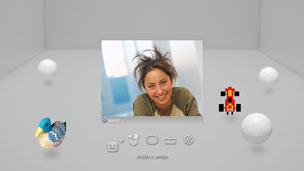

Amigos > Chat de voz o vídeo > Inicio o cierre de un chat de voz o vídeo
Inicio o cierre de un chat de voz o vídeo
Para utilizar esta función, debe mantener siempre el software del sistema actualizado con la versión más reciente.
Es posible mantener un chat de voz o vídeo con los miembros de su lista de amigos. Para realizar un chat de voz, necesita un dispositivo de entrada y salida de audio (como, por ejemplo, unos auriculares con micrófono, que se venden por separado). Para realizar un chat de vídeo, necesitará además una cámara USB (se vende por separado).
Inicio de un chat de voz o vídeo
1. |
Seleccione |
|---|---|
2. |
Seleccione |
3. |
Seleccione |
4. |
Escriba un mensaje y seleccione [Enviar].  Si la persona acepta la invitación, se visualizará su imagen y se iniciará el chat de voz o vídeo. |
 (Amigos) >
(Amigos) >  (Iniciar nuevo chat).
(Iniciar nuevo chat). (Chat de voz/vídeo).
(Chat de voz/vídeo). (Invitar a amigo) del menú que se muestra en la pantalla.
(Invitar a amigo) del menú que se muestra en la pantalla.Notas
- El sistema PS3™ admite chat de voz y vídeo. Otras opciones de chat como, por ejemplo, chatear mientras se juega, podrían estar disponibles a través del software del juego en cuestión. Para obtener más información, consulte las instrucciones suministradas con el software que se esté utilizando.
- Deberá haber iniciado sesión en PSNSM para poder iniciar un chat.
- Aunque puede invitar a varios amigos para realizar un chat, la sala de chat sólo mostrará los avatares de los cinco primeros seleccionados en la pantalla.
- En una sala de chat pueden participar hasta seis personas.
- No es posible utilizar la función de chat de voz o vídeo si se establecen restricciones de uso. Para obtener información sobre los ajustes de control paterno, consulte [Acerca del menú XMB™] > [Uso de los ajustes de control paterno] de esta guía.
- Es posible utilizar unos auriculares con micrófono USB, unos auriculares con micrófono Bluetooth®, una cámara USB EyeToy™, una cámara PlayStation®Eye o cámara USB compatible con vídeo (UVC) compatibles con el sistema PS3™.
- Cuando conecte una cámara USB mediante un concentrador USB, utilice un concentrador compatible con USB 2.0. Si utiliza un concentrador no compatible con USB 2.0, es posible que se produzca una degradación de la imagen o que ésta no se visualice.
- Para obtener información acerca de los periféricos compatibles y las instrucciones de uso, póngase en contacto con el distribuidor de éstos.
Abandono de la sala de chat (cierre del chat de voz o vídeo)
Durante la sala de chat, seleccione  (Abandonar) en el panel de control.
(Abandonar) en el panel de control.
Nota
La sala de chat se cerrará si la persona que ha iniciado el chat de voz o vídeo la abandona.